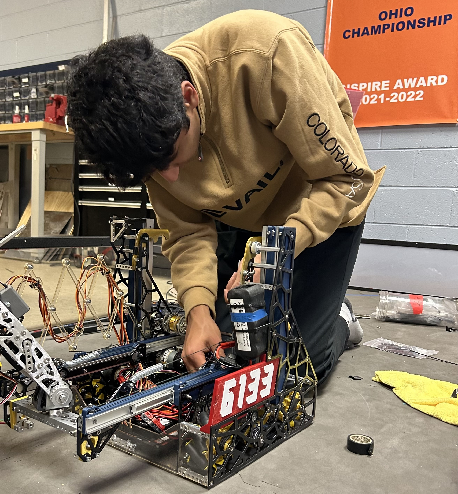
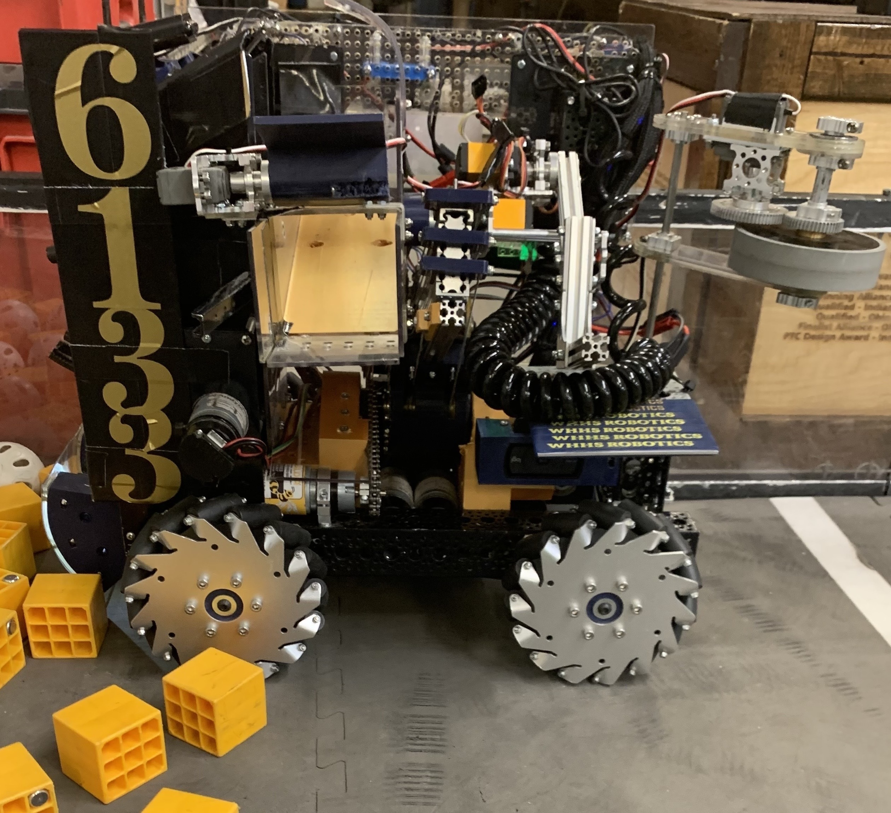
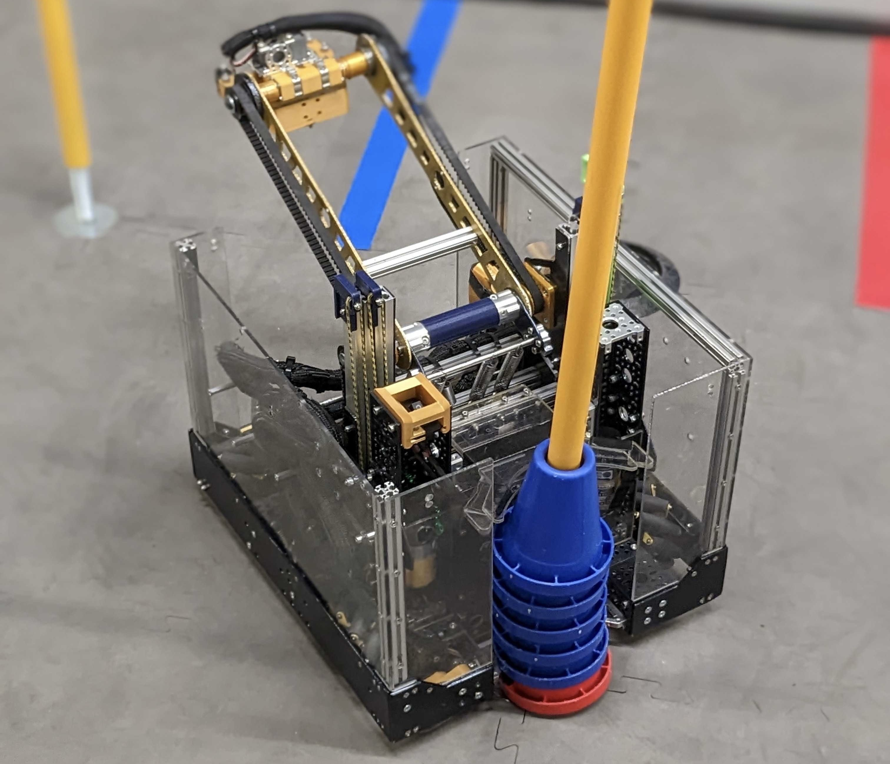
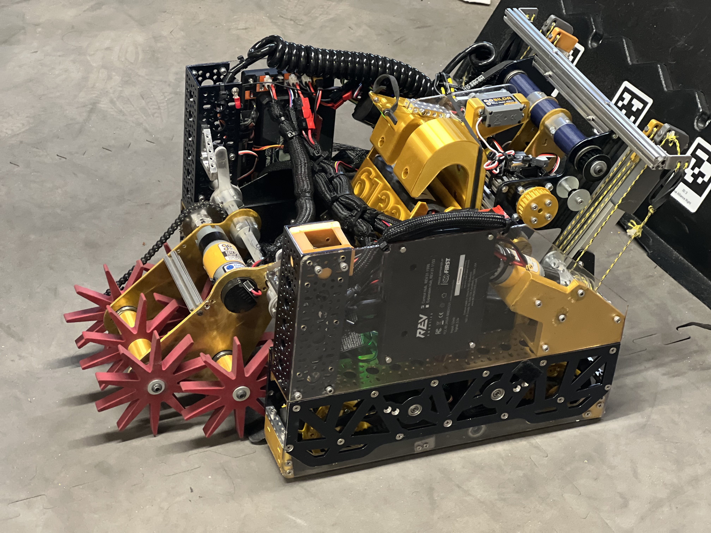
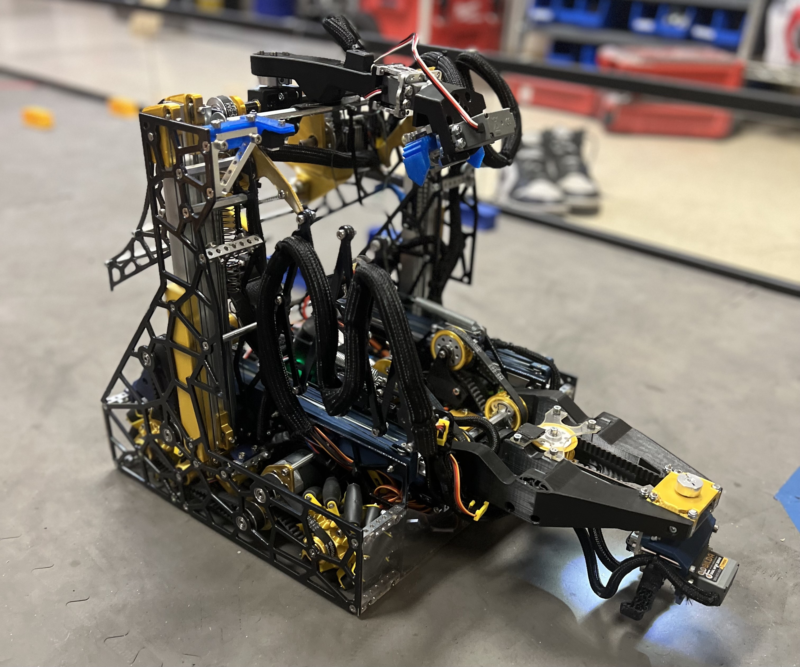

I have been a member of my First Tech Challenge (FTC) Robotics team 6133 The "NUTS!" since 9th grade. I specialize in programming op-modes for the robot in Java (gamepad-controlled and autonomous), assembling and manufacturing mechanisms using advanced machinery, managing all software components (wiring, sensors, power), mentoring rookie team members, and being a lead driver. These are the four robots I was fortunate enough to contribute to and learn from.

Freight Frenzy (2021-2022)

This is The Crab - 6133 The "NUTS!" robot for the Freight Frenzy season. The Crab has a 3-level active intake (uses surgical tubing) on both sides of the robot to bring in spherical and cube-shaped cargo. The cargo is placed in a rectangular output bucket that is mounted on angled, linear slides which extend normal from the robot. The pitch of these slides is controlled by a leadscrew mechanism. A flywheel powered by a servo is used to rotate a carousel clockwise and deliver ducks onto the field. The "NUTS!" qualified for the FTC World Championships in Houston, TX this season. Additional Freight Frenzy Footage
Powerplay (2022-2023)

This is Sursum Ad Junction - 6133 The "NUTS!" robot for the Powerplay season. Sursum Ad Junction uses a virtual four bar arm with a claw serving as its end effector to pick up cones. This virtual four bar is mounted on vertical, linear slides (which are constant-force sprung) so that Sursum Ad Junction can output the cones on junctions of various heights. Sursum Ad Junction uses Kalman Filters, a customized Command Scheduler, and Computer Vision to help with driver assists and autonomous control. Sursum Ad Junction carried The "NUTS!" to 5th place at the FTC World Championships in Houston, TX. Additional Sursum Ad Junction Footage
CenterStage (2023-2024)

This is the Entrapption Contraption - 6133 The "NUTS!" robot for the CenterStage season. Using an active dropdown intake consisting of Andymark Entrapption Stars, the Entrapption Contraption brings in hexagonal-shaped pixels into our transfer system. Once intaken, pixels are transported to the back of the robot via a conveyor belt mechanism. A plunger output mechanism mounted on vertical, linear slides opens up inside of the pixels and then pivots backwards before releasing the pixels on an angled backdrop. The Entrapption Contraption can additionally suspend itself on a horizontal bar and release a paper airplane into a specific landing zone. The Entrapption Contraption carried The "NUTS!" to the State Championship Finals. Additional Entrapption Contraption Footage
Into The Deep (2024-2025)

This is Riptide - 6133 The "NUTS!" robot for the Into The Deep season. Riptide has two sets of linear slides, one extending vertically and the other extending horizontally. Mounted on the horizontal slides is a 4 degree of freedom intake arm that houses a claw used for picking up rectangular samples. Mounted on the vertical slides is a differential output arm that transfers the samples from intake to a bucket to score points. Riptide also retracts its vertical slides to suspend itself on rungs of various heights. Riptide is currently being iterated on. Additional Riptide Footage